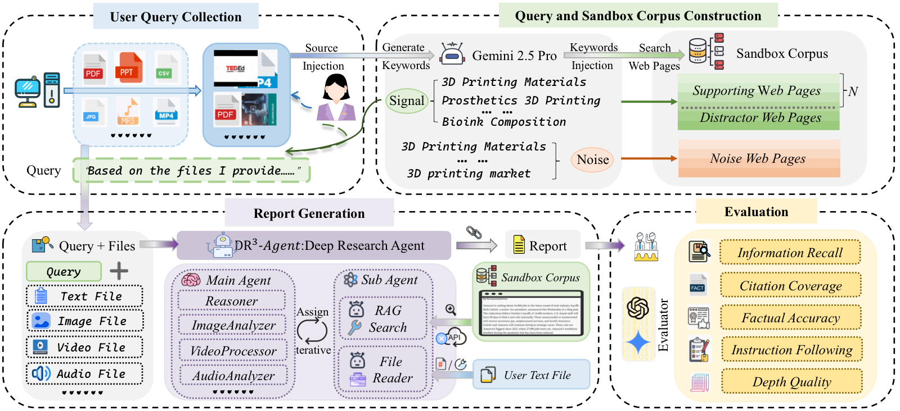
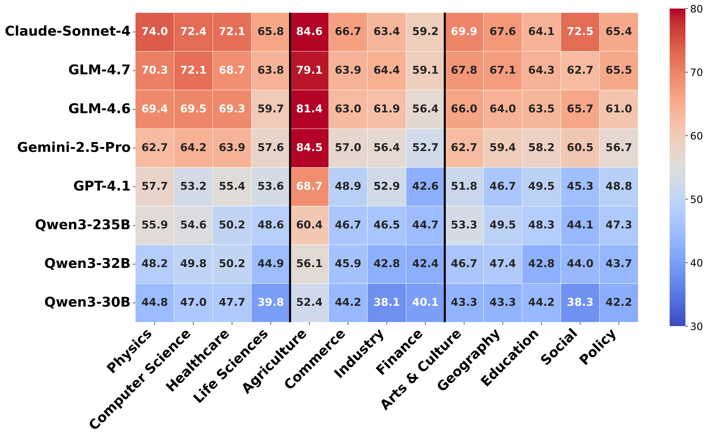
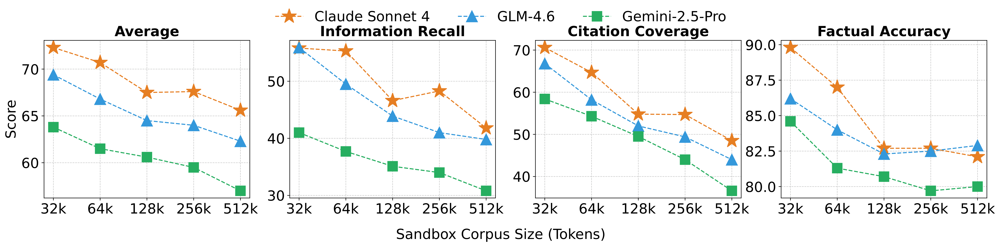
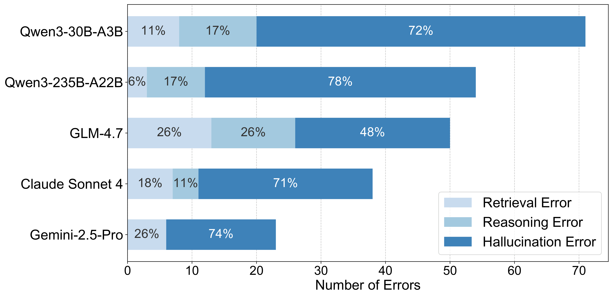
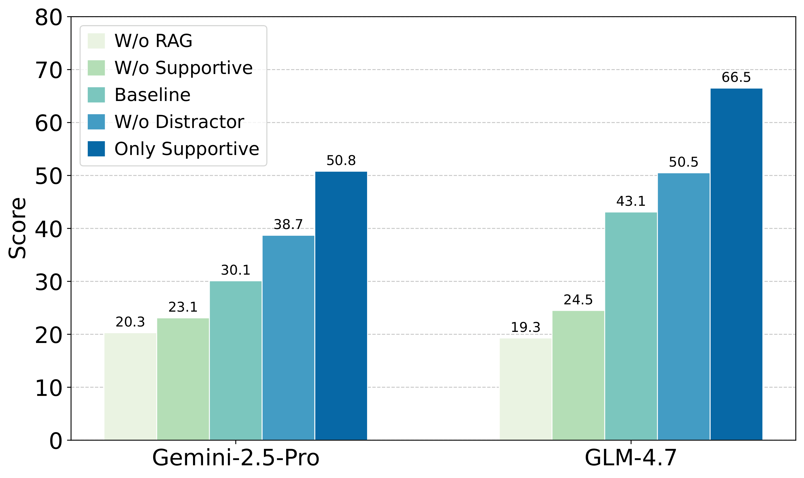

Towards Realistic and Reproducible Deep Research Evaluation
100 tasks (50 EN + 50 ZH), 13 sub-domains, 68% multimodal input.
5 complementary metrics across two dimensions to assess deep research agent performance.
Coverage of key insights from user files and sandbox corpus.
Overlap between cited and required source documents.
Factual correctness of claim-source pairs via entailment.
Whether report satisfies each requirement in a verified checklist.
Expert judge evaluates analytical substance on 1-10 scale.
Evaluation results of 8 state-of-the-art LLMs across 64k/128k/512k sandbox corpus scales.
| Model | IRUF | IRSC | CC | FA | IF | DQ | Avg. | ||||||||||||||
|---|---|---|---|---|---|---|---|---|---|---|---|---|---|---|---|---|---|---|---|---|---|
| 64k | 128k | 512k | 64k | 128k | 512k | 64k | 128k | 512k | 64k | 128k | 512k | 64k | 128k | 512k | 64k | 128k | 512k | 64k | 128k | 512k | |
| Claude Sonnet 4 | 58.8 | 60.4 | 60.8 | 55.3 | 46.6 | 41.8 | 64.7 | 54.8 | 48.5 | 87.0 | 82.7 | 82.1 | 87.4 | 89.2 | 88.5 | 70.7 | 71.5 | 72.0 | 70.7 | 67.5 | 65.6 |
| GLM-4.7 | 55.7 | 55.0 | 57.1 | 53.1 | 47.6 | 42.1 | 65.4 | 55.9 | 45.3 | 84.5 | 82.1 | 80.3 | 88.8 | 89.3 | 88.1 | 71.1 | 71.8 | 72.1 | 69.8 | 66.9 | 64.1 |
| GLM-4.6 | 53.4 | 52.6 | 50.3 | 49.5 | 43.9 | 39.8 | 58.2 | 52.0 | 44.0 | 84.0 | 82.3 | 82.9 | 85.6 | 87.2 | 86.4 | 70.1 | 69.3 | 70.6 | 66.8 | 64.5 | 62.3 |
| Gemini-2.5-Pro | 43.9 | 45.7 | 42.9 | 37.7 | 33.2 | 30.5 | 52.1 | 44.3 | 38.7 | 82.5 | 80.1 | 78.9 | 86.2 | 85.8 | 84.3 | 68.9 | 67.2 | 66.8 | 61.9 | 59.4 | 57.0 |
| GPT-4.1 | 42.3 | 40.8 | 39.5 | 35.2 | 31.8 | 28.4 | 48.6 | 41.2 | 35.9 | 63.8 | 61.5 | 59.2 | 84.9 | 83.7 | 82.1 | 65.3 | 64.8 | 63.5 | 56.7 | 53.9 | 51.4 |
| Qwen3-235B | 44.1 | 43.5 | 41.2 | 38.9 | 34.7 | 31.3 | 50.3 | 43.8 | 37.2 | 52.4 | 50.8 | 48.6 | 85.7 | 84.9 | 83.2 | 66.2 | 65.1 | 64.3 | 56.3 | 53.8 | 51.0 |
| Qwen3-32B | 38.5 | 37.2 | 35.8 | 32.1 | 28.5 | 25.3 | 44.7 | 38.2 | 32.5 | 58.3 | 56.1 | 53.8 | 80.2 | 78.9 | 76.5 | 62.8 | 61.5 | 60.2 | 52.8 | 50.1 | 47.4 |
| Qwen2.5-72B | 35.2 | 34.1 | 32.5 | 29.8 | 26.3 | 23.1 | 41.3 | 35.7 | 30.2 | 55.1 | 53.2 | 50.8 | 78.5 | 76.8 | 74.2 | 60.5 | 59.2 | 57.8 | 50.1 | 47.6 | 44.8 |
Best model achieves only 65.6 avg under 512k. Scaling law remains key.
Performance drops as corpus grows 64k→512k. Noise makes evidence harder to find.
Some models achieve good IF but very low FA. Reports look complete but contain factual errors.
No single model dominates all 13 sub-domains.
A 5-stage pipeline for realistic, controllable, and precisely evaluable deep research benchmarking.

Volunteers provide multimodal materials (text, images, video, audio). 100 document sets across 3 domains and 13 sub-fields.
Divergent-convergent keyword generation splits into Signal Keywords (core path) and Noise Keywords (misleading).
Static sandbox with Supportive, Distractor, and Noise documents. Five context-length settings (32k–512k).
Queries reverse-engineered from verified evidence, ensuring definitive answers grounded in the sandbox.
Four-dimensional validation: implicit guidance, synthesis necessity, insight novelty, interpretative unambiguity.
Detailed analysis across dimensions, corpus scales, error types, and experimental settings.

Claude Sonnet 4 leads Physics (84.6). GLM-4.7 excels in Industry and Policy.
Agriculture and Commerce are hardest across all models.
No single model dominates all 13 sub-domains.

Avg, IR_SC and CC decline as corpus grows from 32k to 512k.
FA remains stable across scales, reflecting reasoning over retrieval.
IF stays high even at 512k, independent of retrieval difficulty.

48–78% of errors are hallucinations.
Lowest hallucination, most retrieval failures.
78% hallucination despite low retrieval failure.

Removing distractors improves performance significantly.
W/o Supportive ≈ W/o RAG, no exploitable shortcuts.
Only supportive docs yield highest scores.
| Metric | Qwen3-235B-A22B | Gemini-2.5-Pro | ||||
|---|---|---|---|---|---|---|
| Baseline | w/ Web | Δ | Baseline | w/ Web | Δ | |
| IRSC | 31.0 | 28.1 | -2.8 | 32.8 | 34.9 | +2.1 |
| IRUF | 43.6 | 47.9 | +4.3 | 36.9 | 42.4 | +5.4 |
| FA | 63.3 | 65.9 | +2.6 | 75.6 | 70.2 | -5.4 |
| DQ | 67.0 | 65.5 | -1.5 | 69.5 | 72.0 | +2.5 |
| IF | 73.4 | 79.1 | +5.7 | 81.4 | 80.4 | -1.0 |
| Avg. | 54.9 | 56.6 | +1.6 | 63.1 | 62.1 | -1.0 |
Δ < 2 points between sandbox and web search.
Sandbox simulates open-web with reproducibility.
| Model | OpenAI-Emb | Qwen-Emb | BM25 |
|---|---|---|---|
| GLM-4.7 | 56.58 | 53.61 | 50.71 |
| GPT-4.1 | 36.15 | 35.64 | 22.60 |
| Gemini-2.5-Pro | 49.51 | 37.16 | 31.25 |
OpenAI embedding-3-small achieves best performance.
Lexical BM25 significantly worse than dense retrieval.
| Evaluation Method | Pearson r | Spearman ρ | Pairwise Agr. |
|---|---|---|---|
| DR³-Eval (Ours) | 0.78 | 0.73 | 0.89 |
| Inter-Human | 0.83 | 0.76 | 0.91 |
r=0.78, ρ=0.73, agreement 89%.
Approaches inter-human consistency (r=0.83, ρ=0.76).
@article{xie2026dr,
title={DR $^{}${3}$ $-Eval: Towards Realistic and Reproducible Deep Research Evaluation},
author={Xie, Qianqian and Xiong, Qingheng and Zhu, He and Xia, Tiantian and Han, Xueming and Meng, Fanyu and Wang, Jiakai and Bai, Zhiqi and Jiang, Chengkang and Wang, Zhaohui and others},
journal={arXiv preprint arXiv:2604.14683},
year={2026}
}